bartcv — Live BART Display
A live BART arrivals and departures display for the Castro Valley station, built on a small ESP32-based touch display that pulls real-time transit data and puts it on a desk, no phone required.
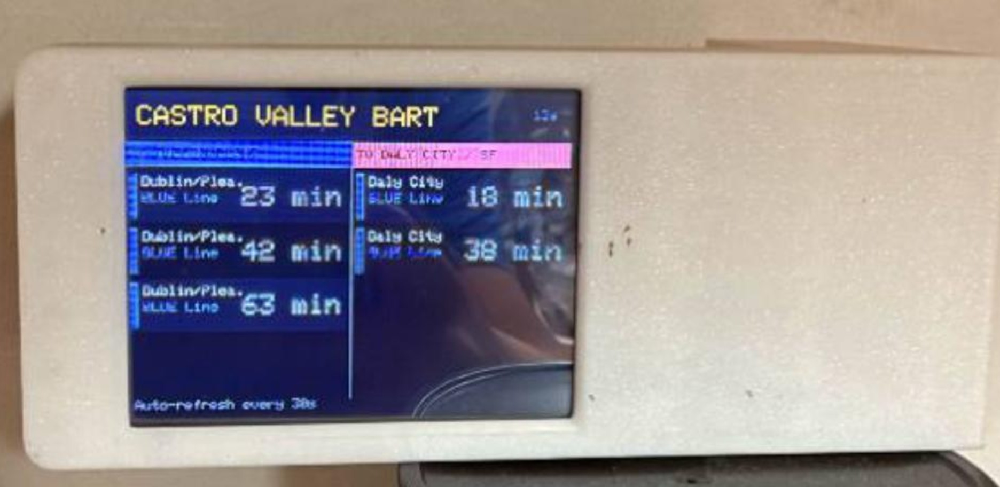
Mechanical Engineering Student, Diablo Valley College
San Francisco Bay Area, CA
cyberekw@gmail.com ·
github.com/earth325 ·
linkedin.com/in/ethankwu
NCAS Student Challenge — Career Portfolio — Due November 30, 2026
My goal is to become a mechanical engineer who designs, builds, and tests hardware for spaceflight. I am a Mechanical Engineering student at Diablo Valley College, pursuing an Associate of Science in Mechanical Engineering (Engineering–Transfer), with anticipated completion in August 2028 and plans to transfer to UC Berkeley, Cal Poly San Luis Obispo, or MIT. My coursework is building the foundation for that work: I am currently taking Analytic Geometry and Calculus I (MATH-192) and Introductory Physics for Engineers (PHYS-129), and in Spring 2027 I will take Calculus II (MATH-193), General Physics II (PHYS-130), General Chemistry (CHEM-108), and Introduction to Engineering (ENGIN-110). Alongside my classes, four years in FIRST Robotics and hands-on projects in CAD, PCB design, firmware, and motor testing have taught me to turn an idea into a working, tested machine. That combination of theory and fabrication aligns directly with NASA’s technology needs in materials, structures, mechanical systems, and manufacturing, and in ground, test, and surface systems,1 and with the Artemis program’s goal of a sustained lunar presence as a step toward crewed missions to Mars.2 I want to contribute to that work as an engineer who can both design hardware and prove it works.
Over four years on FIRST Robotics Competition team 2204, I served as Fabrication Lead and then as Team Captain. As Fabrication Lead, I machined and assembled the robot itself, and as Captain I ran build season for a 30-person team on a $40,000+ budget, including designing and wiring the robot. Our team won East Bay Regional Champions and the Imagery Award, and Sacramento District Winner, the Creativity Award, and Regional Finalists twice. I learned to lead a team through a fixed deadline, solve problems under pressure, and deliver a working machine.
FIRST Robotics mirrors how NASA develops hardware: a team designs, builds, and tests a complex machine against a fixed deadline, then proves it in competition, just as NASA validates hardware on the ground before flight.1 The work falls squarely in TX12 — materials, structures, mechanical systems, and manufacturing — and in TX13, which covers preparing, assembling, and validating aerospace hardware.1 It also built the teamwork, judgment, and communication NASA says its future missions will demand.3

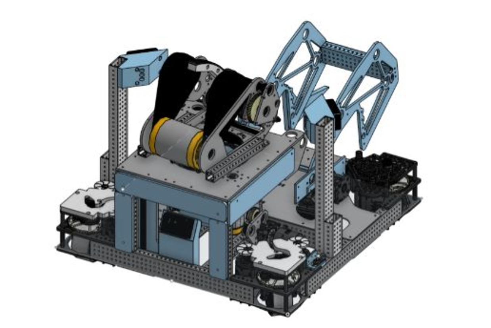
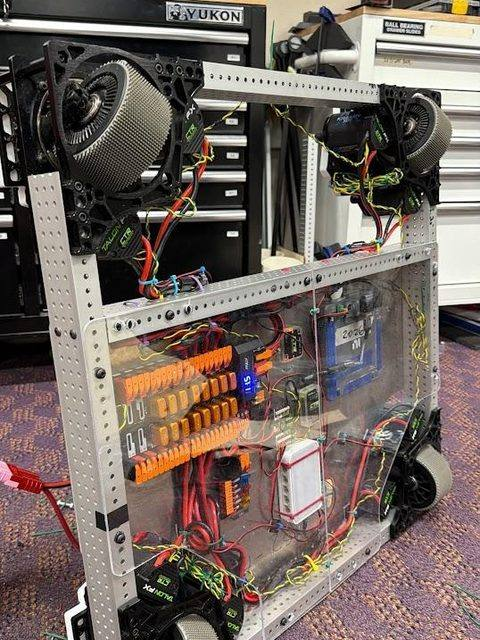
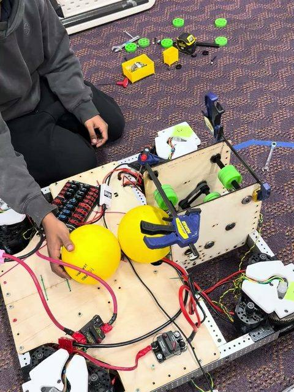
I designed and built Launch-Pad, a macro pad, from scratch: the board, the case, and the code. It uses Cherry MX switches and a small OLED display, with a XIAO RP2040 running KMK firmware so it acts as a USB human-interface device for one-touch app shortcuts, mute toggles, and workspace automation. Designing the schematic and PCB layout, modeling the case, and writing the firmware taught me to carry one product from idea through a finished, working device.
Launch-Pad is a small example of the integrated hardware NASA builds: mechanical design, electronics, and embedded software in one package that must work reliably every time it is used. Its PCB and firmware work connects to TX12 mechanical systems and manufacturing and to flight computing and avionics, where boards and code must be validated before they fly.1 The discipline of designing, testing, and iterating on real hardware is the same discipline behind every NASA instrument and spacecraft subsystem.
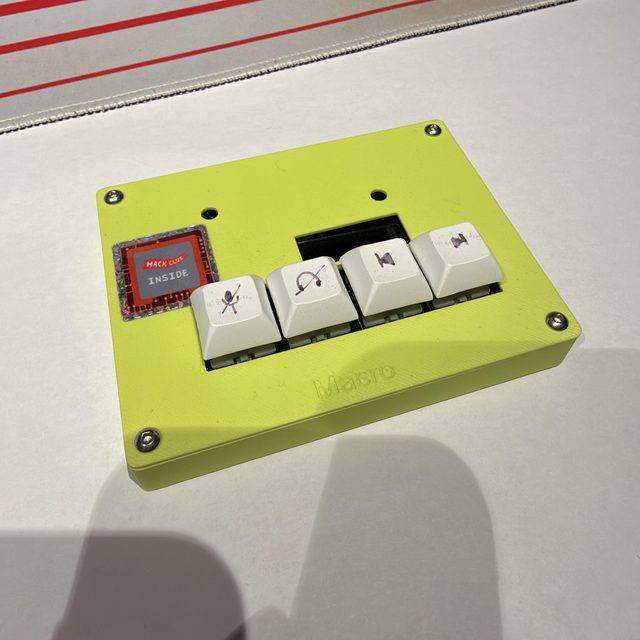
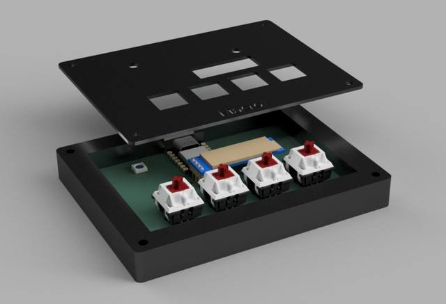

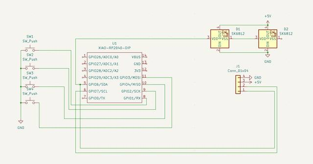
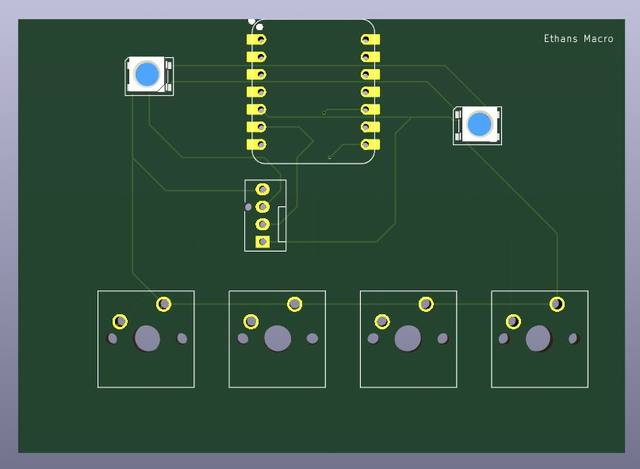
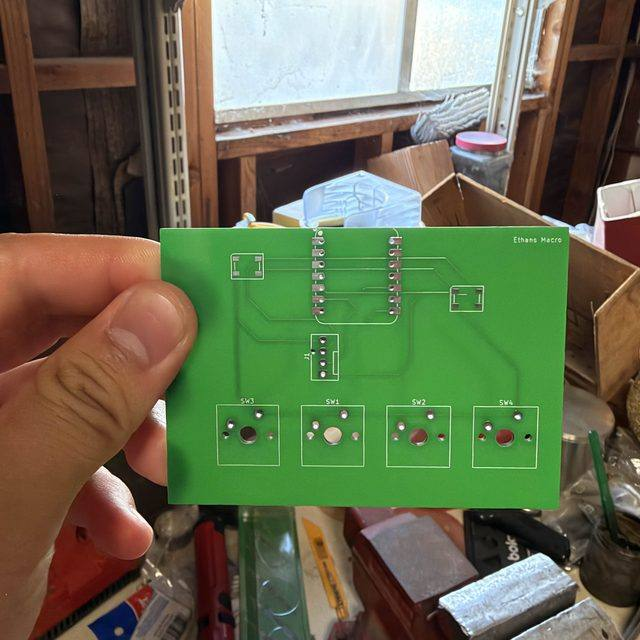
For a quadcopter build, I designed a BLDC motor tester that drives four 2204 motors independently, with four sliders mapped individually to the ESP32 GPIO pins. It runs a full test routine and has an emergency stop, so I can safely validate wiring and motor behavior on the bench before a flight. The tester replaced powering, testing, and unplugging one motor at a time with a repeatable process I could trust.
Testing before flight is a core NASA practice: TX13 covers preparing, assembling, and validating aerospace hardware and operations on Earth before a mission.1 My tester applies that same idea at bench scale — prove the wiring and motors work, with a safe stop if they do not, before the vehicle ever leaves the ground. That test-first mindset is what keeps Artemis hardware and crews safe as NASA builds toward a sustained presence on the Moon and crewed missions to Mars.2
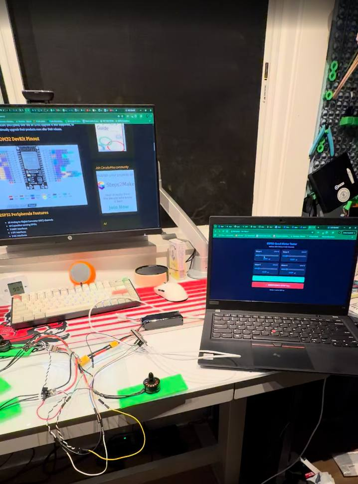
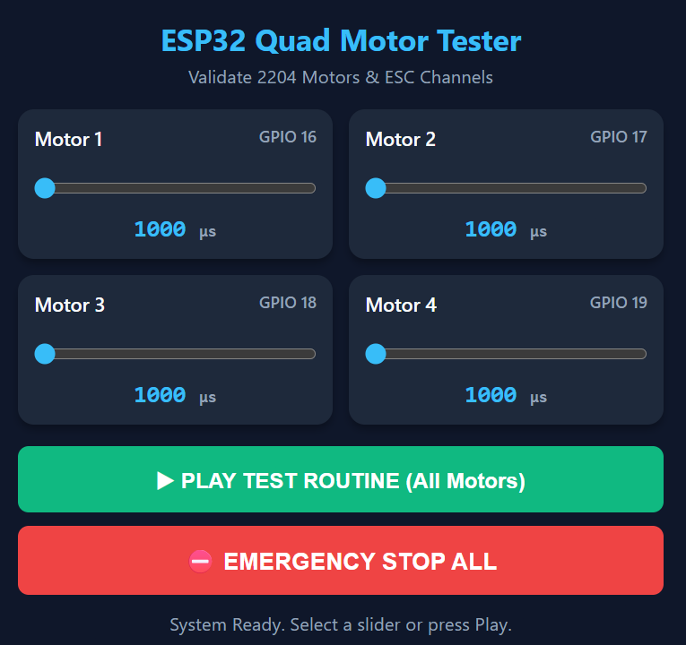

Additional work beyond the three NCAS experiences above.
A live BART arrivals and departures display for the Castro Valley station, built on a small ESP32-based touch display that pulls real-time transit data and puts it on a desk, no phone required.

A drink coaster designed to catch condensation before it pools, inspired by one I saw in Japan. Published free on MakerWorld, it has reached 1.1M impressions, 44k views, 3.2k downloads, 2.6k prints, and 140 boosts.
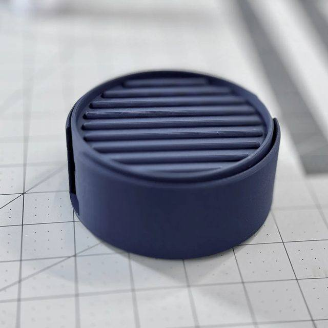
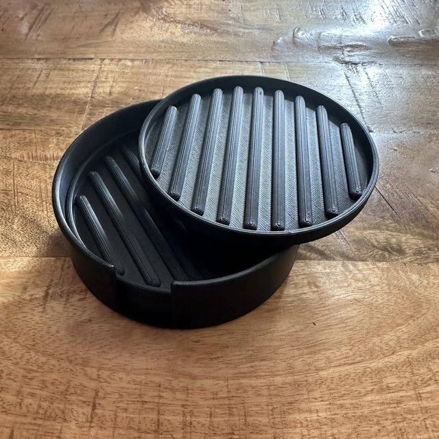


A cup-holder adapter for a Yeti tumbler, modeled in Onshape.

A solar cooker prototype with a 3D-printed parabolic mirror mount, tested outdoors.

A Lenovo ThinkPad running macOS Tahoe as a Hackintosh.

I also prototyped a patent-pending project alongside professional engineers, and outside of build season I teach CAD and engineering basics to students in grades 4 through 7 through FIRST Lego League.
Print this page to PDF for submission. Full resume: flowcv.com/resume/6n2efgjqd1
San Francisco Bay Area, CA · cyberekw@gmail.com · github.com/earth325 · linkedin.com/in/ethankwu
Diablo Valley College — Associate of Science, Mechanical Engineering (Engineering–Transfer), anticipated August 2028. Transfer plans: UC Berkeley, Cal Poly San Luis Obispo, MIT.
Fall 2026: ENGL-C1000E, HIST-C1001, MATH-192 Analytic Geometry and Calculus I, PHYS-129 Introductory Physics for Engineers. Spring 2027: CHEM-108, ENGIN-110 Introduction to Engineering, MATH-193 Calculus II, PHYS-130 General Physics II.
Hestus — Product Testing Intern, San Mateo, CA. Stress-test Sketch Helper, an AI autocomplete assistant for mechanical design inside Autodesk Fusion; find bugs and edge cases, and tag data points that teach the model manufacturable design.
FIRST Robotics Competition, Team 2204 — Fabrication Lead, then Team Captain (4 years). Machined and assembled the robot; ran build season for a 30-person team on a $40,000+ budget, including designing and wiring. East Bay Regional Champions and Imagery Award; Sacramento District Winner, Creativity Award, and Regional Finalists twice.
Technical teaching — FIRST Lego League. Teach CAD and engineering basics to students in grades 4–7.
Launch-Pad — Macro pad built from scratch: custom PCB, case, and KMK firmware on a XIAO RP2040. Quad Motor Tester — ESP32 BLDC test bench driving four 2204 motors independently, with a test routine and emergency stop. bartcv — ESP32 live BART display. Coaster — 3D-printed condensation catcher, 1.1M MakerWorld impressions.
CAD (Onshape); PCB design and electronics integration; embedded firmware (KMK, ESP32); 3D printing and additive manufacturing; machining and fabrication; motor and electromechanical testing; systems integration and wiring; team leadership and technical teaching.